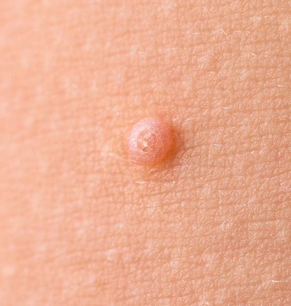
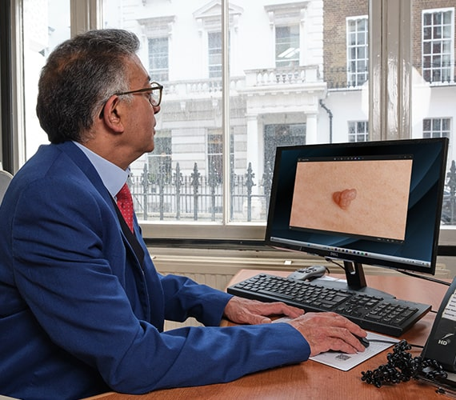
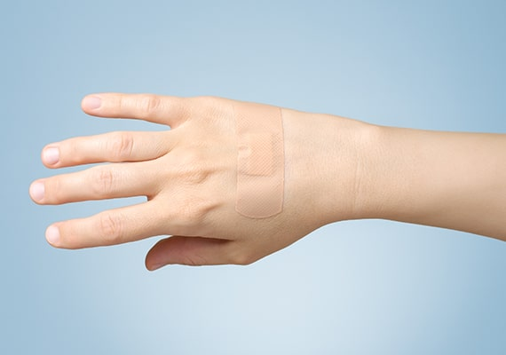
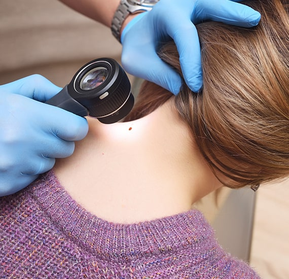
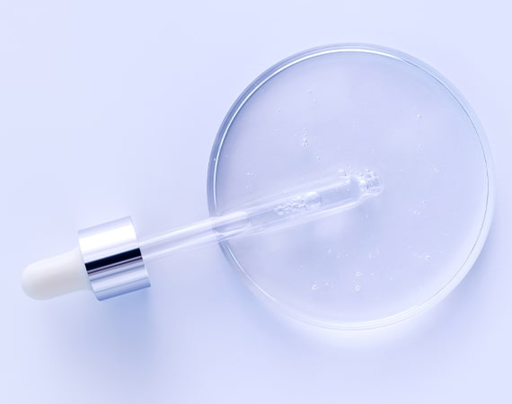
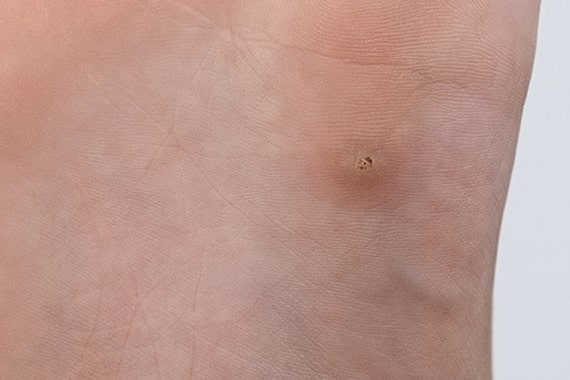
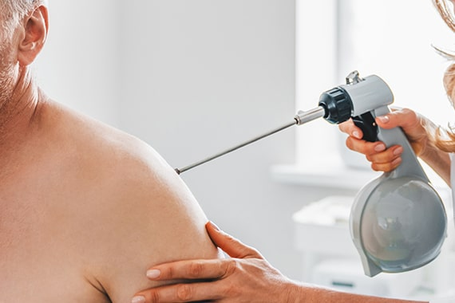

Need help with Warts?
If you are experiencing warts and need treatment, get in touch with our wart removal clinic now to book a consultation with one of our expert dermatologists.


Our wart removal clinic in London is run by expert dermatologists with decades of experience performing wart and verruca removals. Warts often cause both discomfort and embarrassment. Typically appearing on the hands and feet, these rough growths are highly contagious. Treatment in these areas can be intricate, which is why we recommend consulting one of our experienced dermatologists. An alternative treatment option to surgery is cryotherapy, which involves freezing the warts on the hands and feet. This method is more affordable, though results can vary, and many patients seek our surgical expertise after attempting freezing treatments elsewhere.

Warts are small, non-cancerous lumps that frequently appear on the hands and feet. These common skin growths result from a viral infection. Warts can vary in appearance, typically being round or oval with a hard, scaly surface and a small black dot in the centre, which is a clotted blood vessel.
There are various types of warts, which can appear individually or in clusters and tend to affect different parts of the body. For instance, verrucas are warts that typically form on the soles of the feet. Damaged skin on the feet can make one more susceptible to verrucas. Warts are prevalent among school-aged children and teenagers but can also affect healthy adults. They are more common in individuals with weakened immune systems. Most people will experience a wart at some point in their lives.For effective wart removal in London, our clinic offers a range of treatment options to suit your individual needs.

Warts are caused by certain strains of the human papilloma virus (HPV). HPV is a family of viruses with more than 100 different strains. The virus usually affects the skin and mucosa (the moist membranes) of the body, causing an excess amount of keratin (a protein) to build up in the top layer of the skin (epidermis). This extra keratin in the epidermis produces the hard, rough texture of the wart, and it is in these skin cells that the virus can be found.

HPV can be spread by close skin-to-skin contact. It can also be spread by autoinoculation, which means the warts can spread to other parts of your own body. If a wart is picked, scratched, or bitten, particles of the virus can spread to other areas of the skin. Even shaving your face or legs or biting your nails can spread HPV. These viral particles can take as long as 12 months to develop into another wart. This 'waiting time' is called the incubation period. The virus can also be spread indirectly through contact with contaminated objects such as the areas surrounding swimming pools, exercise equipment, towels, floors of communal changing rooms, and shoes. For effective wart treatment in London, our clinic offers expert care tailored to your needs.

To prevent getting and spreading warts you can take some simple precautions. Wear flip-flops around swimming pools or in communal changing rooms. Special waterproof plasters to put over warts or verrucas are available at many pharmacies and should be used if you or your child is going swimming. This will prevent the spread of infection to others. There is also a waterproof rubber verruca sock which many prefer to use instead of plasters.

For as long as the wart is present on your body it is thought to be contagious to other people and to other parts of your own body. Viral particles are more likely to spread to skin that is soft, wet, scratched or cut. If a wart breaks up or bleeds, this can also make it easier for the viral particles to spread. You may also be more vulnerable to persistent warts if you take certain medications such as azathioprine or cyclosporine or if your immune system is suppressed from such diseases as HIV (human immunodeficiency virus). Unfortunately, in patients who have these types of diseases it can be almost impossible to get rid of the wart or warts.

Diagnosing a wart is usually relatively easy. The dermatologist will thoroughly examine the affected area of skin and, in most cases, will be able to diagnose a wart based on its characteristic appearance. Sometimes, it can be useful to scrape off the very top layer of the wart to check for the small black dots which are common within warts. Additionally, a dermatologist can use a dermatoscope (a kind of magnifier) to help distinguish a wart from another lesion such as seborrheic keratosis. On rare occasions, a small section of the wart may be removed by shave biopsy and sent to a laboratory for further analysis. This is sometimes done to rule out other types of skin growths or skin conditions. For effective wart removal in London, our clinic offers expert diagnosis and a range of treatment options to best meet your needs.

A wart has the ability to hide from an otherwise normal immune system. Our dermatologists have a range of treatments to combat warts, including a newer method that encourages the immune system to recognize the virally infected cells and eradicate them. The aim of any wart treatment is to remove the wart without leaving a scar. Most warts are harmless and can clear up without any treatment. However, it can take up to two years for the virus to leave your system and for the wart to disappear without treatment. Many people choose to treat their warts, especially if the wart is painful, causing discomfort, in an awkward place, or embarrassing. There are many different treatment options available depending on a patient’s choice and preference. These treatments range from topical applications of salicylic acid to cryotherapy. For effective wart treatment in London, our clinic provides comprehensive care and a variety of treatment options to meet your needs.

Salicylic acid is the most frequently used topical treatment for verrucas and warts. It is available in many forms, such as creams, gels, paint, and plaster. Salicylic acid is a very safe treatment but can have some minor side effects. It can also be used during pregnancy if limited to a small area for a short amount of time and if the formulation of salicylic acid does not contain podophyllin. It works by destroying the wart itself by removing the dead skin cells. However, it also acts against healthy skin, so it is important to protect your skin before using the treatment. Readily available petroleum jelly or a small plaster can be used to cover the skin around the wart to protect the surrounding area from irritation.

Before applying salicylic acid, you should soften the wart by soaking it in warm soapy water for 5 minutes. To encourage deeper penetration of the salicylic acid, you can file down the wart with an emery board or pumice stone. You may only need to do this once or twice a week. Do not share the emery board or pumice stone with others or use it on other areas of your body, as you may end up spreading HPV to other areas. Then apply the paint, gel, or cream to the affected area and leave it to dry. Finally, cover it with a plaster or duct tape.

Cryotherapy involves freezing the wart to destroy the cells. This is an effective and increasingly popular treatment. It is very safe if applied by a trained dermatologist and can even be used to treat warts during pregnancy. A consultant dermatologist will apply liquid nitrogen to the wart for a few seconds, freezing it. Freezing the wart kills the affected skin cells, causing a blister to form. This blister will be replaced naturally by a scab that will fall off in about one week. Each session of cryotherapy takes around 15 minutes and may be a little painful. Larger warts may need several sessions of cryotherapy to clear them. The freezing is usually repeated at 1 to 3 week intervals for around 3 months.

Some pharmacies sell a type of ‘freezing’ aerosol spray treatment over the counter. The active ingredient in these sprays is not liquid nitrogen but another compound called dimethyl ether propane. Although it feels cold when sprayed, these sprays are not as effective as cryotherapy using liquid nitrogen. Chemical treatments available on prescription include formaldehyde, silver nitrate, and glutaraldehyde. These work by attacking the skin cells of the wart and killing them. They also affect the healthy surrounding skin, so it is important to protect the area before using these treatments. Silver nitrate can burn the surrounding skin, so it should be used with particular caution. Glutaraldehyde can stain the skin brown.

Other treatments include topical retinoids such as adapalene and tretinoin, fluorouracil cream, and injections of bleomycin. Very few warts require electrosurgery, also known as curettage and cautery. This procedure is typically used for large warts and is performed under local anaesthetic. The wart is burned away, leaving a wound that takes around two weeks to heal. This treatment will leave a scar so is not usually recommended. If you are seeking wart removal in London, our clinic provides a range of effective treatments designed to meet your needs.

Warts can be permanently removed with treatment in most cases, but they also have the ability to return, especially if not treated properly. Whether or not your warts can be completely removed will also depend on their type and severity.
Our dermatologists are professionally trained in successfully removing warts from the skin. They will also advise you on the proper aftercare to ensure they don’t return, as well as provide guidance on how to prevent them from spreading to other parts of the body. For more information regarding the treatment of warts, please contact our wart removal clinic in London on 020 7467 3720.

When you book an appointment with one of our expert dermatologists, they will begin by examining your wart(s) and confirming the diagnosis. They will ask when the warts appeared, how long they have been present, and whether they have been removed in the past and then returned.
The care plan they suggest will depend on the severity and type of your warts and the treatments you have already tried (such as over-the-counter creams and gels). They may prescribe stronger topical treatments for you to apply at home or suggest going straight to cryotherapy, which involves freezing off the warts with a specialist machine. They may recommend a combination of treatments to initially remove the wart, along with a care plan to ensure they don’t return. They will also explain the implications of different treatments, such as the possibility of scarring on the skin left behind.
We treat all common types of warts, including plantar warts, flat warts, filiform warts, and genital warts. Each case is assessed individually to determine the most effective treatment method.
Treatment options include cryotherapy (freezing), electrosurgery, topical treatments, laser therapy, and curettage. Your dermatologist will recommend the most suitable approach based on the wart’s size, location and response to past treatments.
Some discomfort may be felt during certain treatments like cryotherapy or laser, but local anaesthetic can be used to minimise this. Most procedures are quick and well tolerated.
This depends on the size, type, and how long the wart has been present. Some warts resolve in one session, while others may require multiple treatments for full clearance.
Yes, we regularly treat persistent or treatment-resistant warts. Our consultants have access to advanced therapies that are often more effective than over-the-counter or standard options.
Yes, we offer wart treatment for both adults and children. We use child-friendly techniques and aim to make the experience as quick and comfortable as possible.
There is a small risk of scarring depending on the method used and the location of the wart. Your dermatologist will take every precaution to minimise any cosmetic impact.
Most people can resume normal daily activities immediately after wart removal. However, if the treated area is on the foot or hand, you may be advised to avoid friction or pressure for a day or two.
Our wart removal clinic is located at 69 Wimpole Street, near London’s Harley Street. If you are coming by underground, Bond Street Station is a seven-minute walk away. For those driving, there is plenty of street parking available. Our dermatology clinic also offers wheelchair access for those who need it.
Monday - Friday: 9.00 AM - 5.30 PM
Saturday & Sunday: Closed
69 Wimpole Street,
London W1G 8AS.
If you are experiencing warts and need treatment, get in touch with our wart removal clinic now to book a consultation with one of our expert dermatologists.